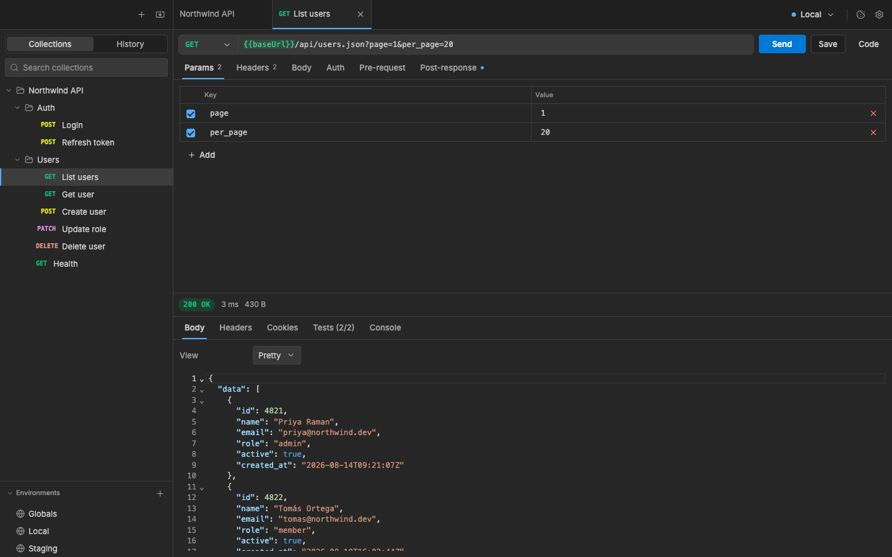
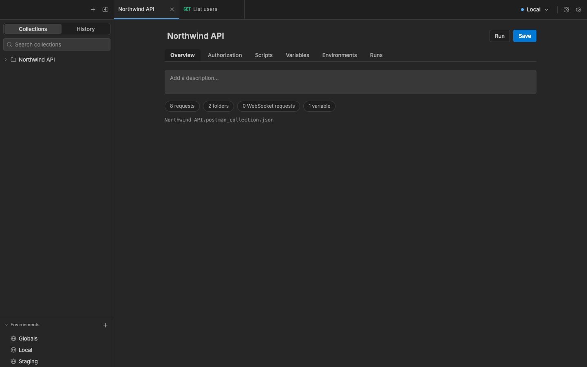
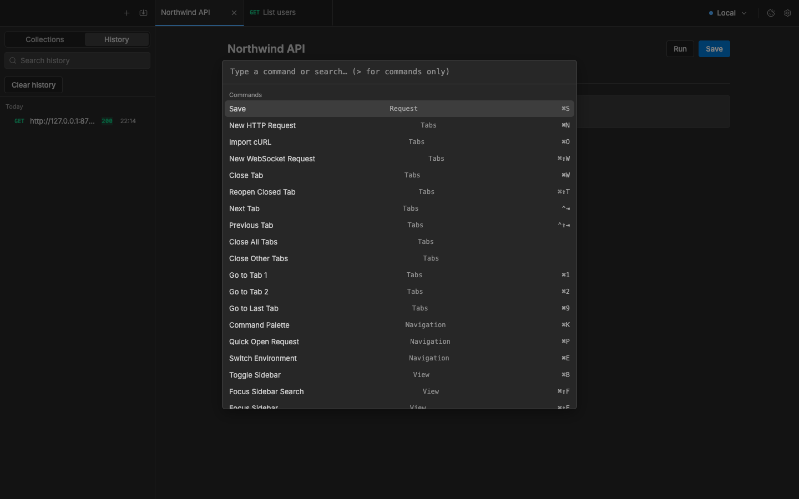
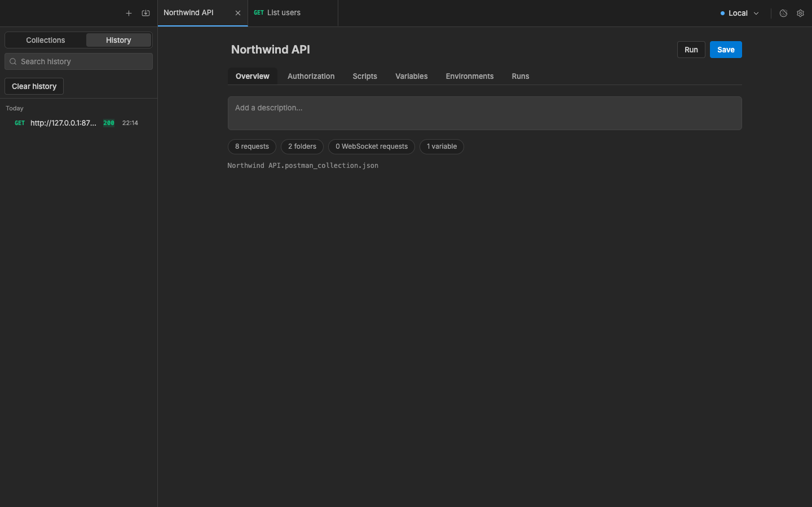

The redesign turns Restly into a quieter, denser instrument. It uses one accent, muted method colors, a single type scale and three radii. States are designed rather than left as one line of text. The layout stays the same: sidebar, tabs, request over response. That keeps every shortcut and the VS Code theme system working. Every color is still a theme token, so the redesign ships as new token values plus component CSS.
Why it looks unfinished today
From screenshots of the current build (v0.2.0) with a sample workspace.

Request and response

Collection overview

Command palette

History
F1Method colors are terminal ANSI colors. POST is #e5e510, a neon yellow, and the five methods have different lightness. The tree reads as a rainbow before it reads as a list.
F2Too many button styles in one row. The request bar has a separate method box, a filled blue Send, an outlined Save and a bare "Code" text. Three treatments for four actions.
F3Heavy controls where quiet ones belong. The Collections/History switch is a filled pill. Tables put a bright blue checkbox and a red X on every row.
F4Form layouts inside tool panels. "View [Pretty]" in the response and "Name [Local] Save" in environments are settings-form patterns, not editor chrome.
F5Pages are sparse forms. The collection overview is an empty textarea and four bordered pill chips in a narrow centered column, with most of the window blank.
F6Weak hierarchy. Nearly everything is 13 to 14 px at weight 500 or 600. Titles, labels and values compete, and numbers are proportional, so times and sizes jitter.
F7The palette looks unfinished. It lists every command unfiltered, the group name floats in a misaligned middle column, the placeholder is monospace and rows have no icons.
F8States are one line of text. First run, empty response, in flight and errors are bare sentences. There is no place that confirms auto-save worked.
Direction
P1One accent. Blue marks the single primary action per view, focus and the active tab. Nothing else is blue.
P2Methods share one lightness. Saturation stays under about 55%, so method tags identify requests without shouting.
P3Type scale 11 / 12 / 13 / 15 / 20, weights 400 / 500 / 600. Tabular numerals wherever a number changes: status, time, size, counts.
P4Three radii. 3 px for badges and keycaps, 5 px for controls, 7 to 10 px for panels and overlays. The current UI uses 6 px on everything.
P5Actions reveal on hover. Row actions, delete icons and close buttons appear on hover or focus. Shortcuts sit next to the action they trigger.
P6Every state is designed. First run, empty, in flight, error, cancelled and saved each get a composed view with a next step.
Tokens
Names match ThemeTokens in frontend/src/theme/tokens.ts. Dark keeps the #262626 editor surface. Borders hold the 1.4:1 floor the contrast guard enforces.
Radii3 px badge5 px control7 px panelHeightsBar 40, URL 34, control 28, table row 30, tree row 26, status 24Keys⌘K⌘↵⇧⌥FTags200 OK403ERRcurrentJSON
Screens
Each screen has numbered notes that compare it to the current UI. Use "Toggle light/dark" at the top right of any page. Notes marked "(proposed)" are new features rather than restyles.
Shipping it
S1Token values. Put the new values from tokens.css into darkTokens and lightTokens in themes.ts. Method colors go in as restly.method*, so imported VS Code themes keep their ANSI-derived colors unless they set these keys. Add primaryTint, successTint, warningTint and dangerTint as new tokens, blended from the base color in vscode.ts.
S2Layout tokens. Replace radius and radiusSmall with three radii, and add the type scale and control heights to layout. These are not theme colors, so imported themes are unaffected.
S3Component CSS, one area per change. Sidebar header and view tabs, tree rows, tab strip, request bar (method inside the URL field), KvTable, response header, command palette, overview pages. Each is a CSS change plus small markup moves in the component named in the screen notes.
S4Additions, each optional. Status bar, timing popover, welcome view, Description column and Bulk edit in tables, run summary bar and filter, palette footer. Each is marked "(proposed)" in the notes, so it can be cut without touching the restyle.
S5Checks that still apply.colors.check.ts (no literal colors) and theme-contrast.check.ts (text 4.5:1, focus 3:1, borders 1.4:1) cover the new values. One Dark needs the same method-color pass.
S6Order. S1 and S2 first, since they change every screen at once. Then S3 by area, starting with the request screen. S4 last.